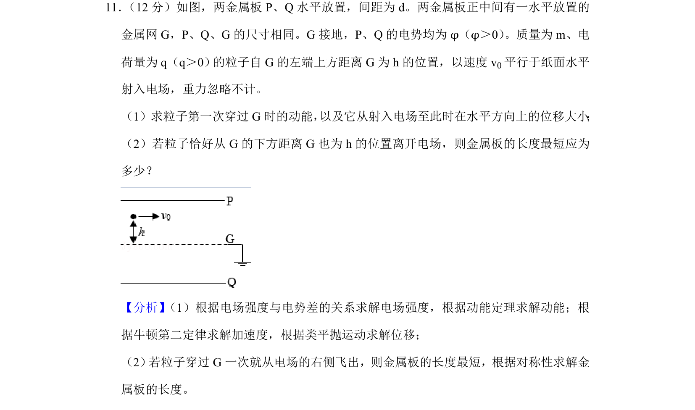
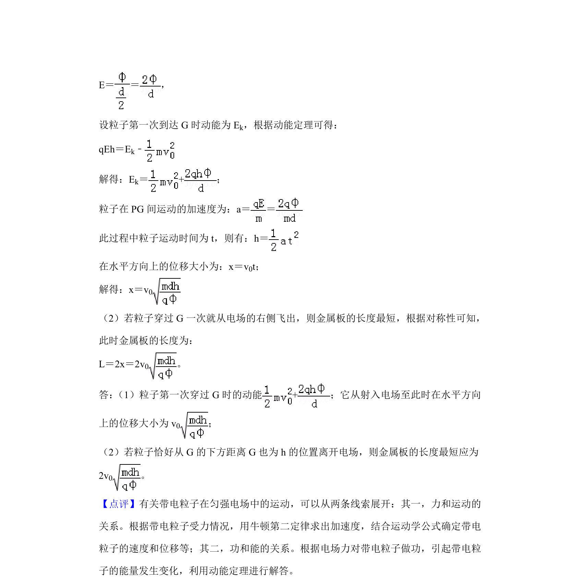

考点：动能定理 类平抛运动 对称性

带电粒子在匀强电场中的类平抛运动，涉及动能定理和对称性求最短板长

📄 原 PDF 第 10 页：
素材/真题/吉林/2008-2024·（吉林）物理高考真题/2019年高考物理试卷（新课标Ⅱ）（解析卷）.pdf
11． （12分）如图，两金属板P、Q水平放置，间距为d。两金属板正中间有一水平放置的 金属网G，P、Q、G的尺寸相同。G接地，P、Q的电势均为φ（φ＞0） 。质量为m、电 荷量为q（q＞0） 的粒子自G的左端上方距离G为h的位置，以速度v 0平行于纸面水平 射入电场，重力忽略不计。 （1）求粒子第一次穿过G时的动能， 以及它从射入电场至此时在水平方向上的位移大小 ； （2）若粒子恰好从G的下方距离G也为h的位置离开电场，则金属板的长度最短应为 多少？
【分析】 （1）根据电场强度与电势差的关系求解电场强度，根据动能定理求解动能；根 据牛顿第二定律求解加速度，根据类平抛运动求解位移； （2） 若粒子穿过G一次就从电场的右侧飞出，则金属板的长度最短，根据对称性求解金 属板的长度。 【解答】解： （1）PG、QG间的电场强度大小相等、方向相反，设为E，则有：